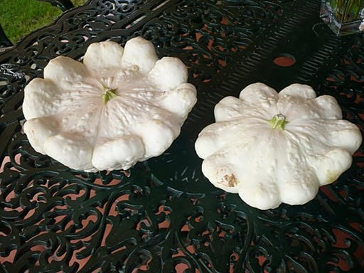
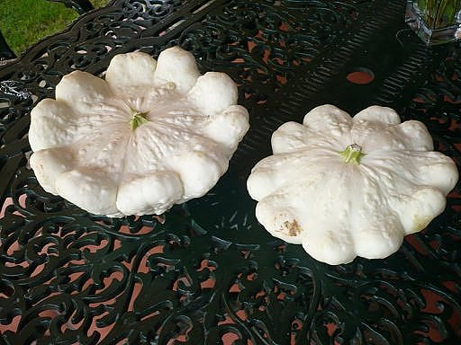

El momento ideal para sembrar calabaza es en primavera, y se puede realizar una siembra directamente de semilla a principios de primavera, y utilizar una especie de plástico protector para protegerla de las heladas; o bien, realizar la siembra desde almácigos protegiéndolos de las heladas y trasplantarlos cuando lleguen las temperaturas cálidas. Es importante mantener una distancia entre cada planta de calabaza de 1, 2 mts. y, si decides utilizar una maceta, elije una que tenga una profundidad mínima de 40 cms, tarda en crecer cuatro meses.
nombre
tiempo de cultivo
temporada del año
zanahoria
2 o 3 meses
Primavera, Otoño e Invierno
acelga
8 semanas
Primavera y Otoño
espinacas
2 meses
Primavera y Otoño
fresas
2 a 3 semanas
primavera
calabazas
4 meses
primavera
que beneficios tiene la calabaza:
¡Comer calabaza es bueno para el corazón! Su alto contenido de vitamina C, fibra, y potasio.


 
